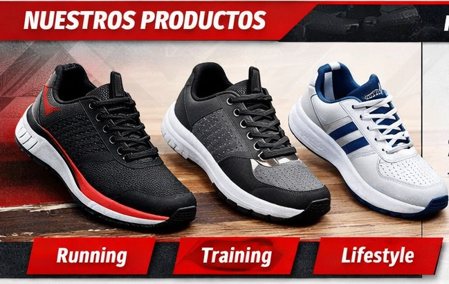

SportKick
Es una empresa dedicada a la venta y distribución de tenis deportivos y casuales, enfocada en ofrecer productos que combinan rendimiento, comodidad y estilo. Nació con la idea de atender las necesidades de personas activas y amantes de la moda urbana, brindando calzado de alta calidad para cada ocasión..
Nuestra propuesta se basa en tres pilares:
- Innovación constante en diseño y tecnología de materiales
- Experiencia personalizada tanto en tienda física como en línea.
- Compromiso sostenible mediante el uso de materiales reciclados y procesos responsables.
Con una visión moderna y juvenil, SportKick busca posicionarse como una marca referente en el mercado latinoamericano, ofreciendo una experiencia de compra dinámica, confiable y visualmente atractiva.
Misión
Ofrecer los mejores tenis deportivos y casuales para quienes buscan rendimiento, estilo y comodidad.
Visión
Ser la tienda líder en innovación y calidad en calzado deportivo en Latinoamérica, con presencia física y digital.
Ir ArribaValores
- Pasión ❤️.
- Calidad 🛡️.
- Innovación 💡.
Ideas de Negocio
- Tenis deportivos de marcas reconocidas (Nike, Adidas, Puma).
- Tenis casuales de moda para jóvenes urbanos.
- Línea propia de tenis sostenibles con materiales reciclados.
- Servicio de personalización: colores, estampados, iniciales.
- Tienda online con envíos nacionales e internacionales.
Recursos
- Local comercial en zona céntrica.
- Plataforma e-commerce con pasarela de pagos.
- Inventario inicial de 500 pares de tenis variados.
- Equipo de ventas y marketing digital.
- Contratos con proveedores nacionales e internacionales.
Productos Principales

- Running: Tenis ligeros y resistentes para corredores..
- Training: Tenis versátiles para gimnasio y entrenamientos..
- Lifestyle: Tenis casuales para uso diario y moda urbana..
- Eco Line: Tenis sostenibles hechos con materiales reciclados.
Proyecciones
- Primer año: Meta de $500,000 USD en ventas.
- Tres años: 8 tiendas físicas + plataforma e-commerce consolidada.
Contacto
- Teléfono: 555-123-4567
- Email: info@sportkick.com
- Web: www.sportkick.com
- Dirección: Av. Deportiva 123, Ciudad Ejemplo